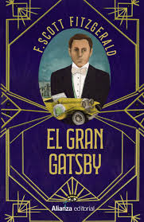
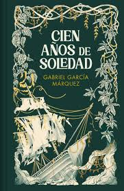

Reseña 1: El Gran Gatsby
|  |
Descripción: El Gran Gatsby es una novela sobre el amor, la ambición y la obsesión durante la época del jazz en los Estados Unidos. El protagonista, Nick Carraway, narra la vida de su enigmático vecino, Gatsby, mientras explora el sueño americano y la decadencia de la sociedad de la época. Autor: F. Scott Fitzgerald |
Reseña 2: Cien Años de Soledad
|  |
Descripción: Esta novela es la obra más famosa de Gabriel García Márquez y un pilar del realismo mágico. Narra la historia de la familia Buendía en el pueblo ficticio de Macondo, abordando temas como el amor, el destino, y la soledad a lo largo de varias generaciones. Autor: Gabriel García Márquez |
Reseña 3: 1984
|
Descripción: 1984 es una de las obras más importantes de la literatura distópica, escrita por George Orwell. La historia se desarrolla en un futuro totalitario donde la libertad está controlada por un gobierno opresivo. El protagonista, Winston Smith, lucha por encontrar la verdad en un mundo plagado de vigilancia y represión. Autor: George Orwell |